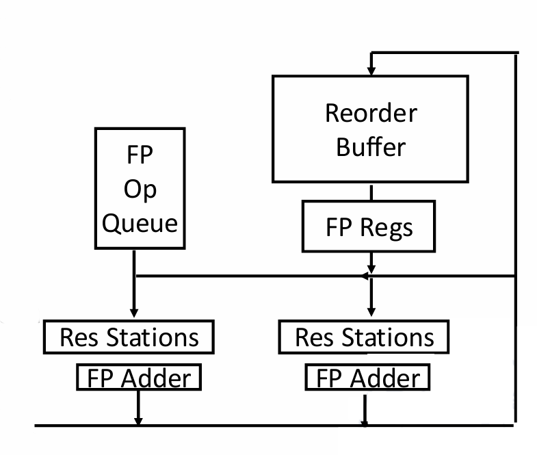
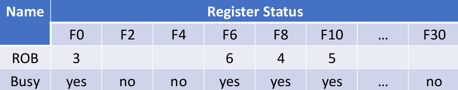

Chapter2 Instruction-Level Parallelism (ILP)
Data Dependences:
前面指令的目标寄存器是后面指令的源寄存器（F0），这种依赖关系称为RAW (Read After Write)。
Name Dependences:
前面指令的源寄存器是后面指令的目标寄存器（F6），这种依赖关系称为WAR (Write After Read)。
这种情况的name dependence称为anti-dependence（反相关），对于顺序执行的流水线没有问题，但乱序会有问题。解决方法之一是重命名：
前面指令的目标寄存器是后面指令的目标寄存器（F2），这种依赖关系称为WAW (Write After Write)。
这种情况的name dependence称为output-dependence（输出相关），对于顺序执行的流水线没有问题，但乱序会有问题。解决方法之一同样也是重命名：
Control Dependences:
Hazards:
- Structure hazards
- Data hazards
- RAW
- WAR
- WAW
- Control hazards
Dynamic Branch Prediction:
- branch prediction buffer (BPB) 存储branch预测结果（branch history table）
- branch target buffer (BTB) 存储branch目标地址
- translation lookaside buffer (TLB) 虚拟内存地址转换

2.2 Scoreboard Algorithm
Scoreboard Algorithm是一种指令乱序执行的算法。
操作一：
将EX阶段的计算元件进行拆分，得到执行单一功能的元件，从而允许并行。

如上图所示，一共有以下几个功能部件：
- Integer unit：处理整数运算
- FP add：处理浮点数加减法
- FP mult：处理浮点数乘法
- FP div：处理浮点数除法
Note
上图中的乘法部件有两个，这是因为乘法的计算时间较长，更多部件能加快计算。 除法虽然与乘法一样有很长的计算时间，但由于除法使用较少，因此只有一个除法部件。
操作二：
将ID阶段拆分成两个阶段：
- IS (Issue): 只有当前指令与其他指令没有结构冲突时才能进入IS阶段
- RO (Read Operands): 只有当前指令与其他指令没有数据冲突时才能进入RO阶段
假设有以下指令：
① FLD F6,34(R2)
② FLD F2,45(R3)
③ FMUL.D F0,F2,F4
④ FSUB.D F8,F6,F2
⑤ FDIV.D F10,F0,F6
⑥ FADD.D F6,F8,F2
现在来考虑其乱序执行过程。
首先，指令①依次完成IS、RO、EX、WB阶段，直到WB阶段完成后才能释放部件。这时指令②才不会有结构冲突，才能进入IS阶段，因为指令②和指令①使用相同的部件（Integer unit）。
接下来，指令②依次完成IS、RO、EX阶段。假设其WB阶段的时间较长，一直处在WB阶段，我们来观察其他指令的情况。
指令③没有结构冲突，因此完成IS阶段；但指令③的源寄存器F2和指令②的目标寄存器F2发生数据冲突（指令②还没有将正确的值写入F2），因此指令③停在IS阶段。
指令④和指令⑤同理，其都没有结构冲突，但都有数据冲突，因此都停在IS阶段。
指令⑥与指令④使用相同的部件（FP add），指令④占用着资源但并没有完成，因此产生结构冲突，指令⑥无法进入IS阶段。
操作三：
绘制三张表：
①指令状态表：表示每条指令的执行情况。
②功能部件状态表：表示每个功能部件的占用情况。
- Name列：功能部件
- Busy列：当前是否被占用
- Op列：如果被占用，占用的指令（操作）是什么
- Fi列：目标寄存器
- Fj、Fk列：源寄存器
- Qj、Qk列：源寄存器的值是否需要等待，若已经就绪则为空，否则标明需要从哪个功能部件上获取
- Rj、Rk列：
- yes：表示值已经准备就绪，只是还没读（可能还在等其他操作数就绪）
- no+对应的Q为空：表示值已读
- no+对应的Q非空：表示值还没有准备就绪

③目标寄存器状态表：表示每个目标寄存器的对应情况，实际上都包含在功能部件状态表中。
假设指令②完成了WB阶段，并且指令③完成了IS、RO、EX阶段，处在WB阶段正在写回，我们来观察其他指令的情况。
指令④此时没有数据冲突（因为指令②已经将正确的值写入F2），因此其能够进入RO阶段，如果其运行的速度够快，则有可能比指令③更早完成WB阶段（假设确实如此）。
指令⑤此时依然有数据冲突，因为指令③还没有将正确的值写入F0，因此其停在IS阶段。
指令⑥此时没有结构冲突或数据冲突（因为我们假定指令④已经完成），因此其能够完成IS、RO、EX阶段，但其不能进入WB阶段，因为如果其将结果写入F6，会导致指令⑤出错。

假设指令③完成了WB阶段，如果指令⑤完成了IS、RO、EX阶段，停在WB阶段准备读写，由于指令⑤的F6在RO阶段已经读取，因此指令⑥可以完成WB阶段，比指令⑤更早完成。


Example
假设对于EX阶段，Add操作需要2个时钟周期，Multiply操作需要10个时钟周期，Divide操作需要40个时钟周期，Load操作需要1个时钟周期。考虑以下指令：
① FLD F6,34(R2)
② FLD F2,45(R3)
③ FMUL.D F0,F2,F4
④ FSUB.D F8,F6,F2
⑤ FDIV.D F10,F0,F6
⑥ FADD.D F6,F8,F2
总共需要多少个时钟周期？
| $~$ | IS | RO | EX | WB |
|---|---|---|---|---|
| ① | 1 | 2 | 3 | 4 |
| ② | 5 | 6 | 7 | 8 |
| ③ | 6 | 9 | 10 | 20 |
| ④ | 7 | 9 | 10 | 12 |
| ⑤ | 8 | 21 | 22 | 62 |
| ⑥ | 13 | 14 | 15 | 22 |
注：表格中的数字表示该指令在第几个周期进入该阶段。
Note
要点： * 进入IS阶段要判断：是否有空闲的功能部件 * 进入RO阶段要判断：源寄存器是否有数据冲突，即之前的指令还没有将其正确值写入 * 进入EX阶段无需判断 * 进入WB阶段要判断：如果写回目标寄存器是否会影响之前指令的正误
注意： * 指令只有完成WB阶段后才会释放资源，而不是在完成EX阶段后 * IS阶段一个周期只能进入一条指令，而RO、EX、WB阶段可以同时进入指令
2.3 Tomasulo Algorithm
Tomasulo Algorithm是Scoreboard Algorithm的一种改进，分为结构冲突和数据冲突两个方面的改进。
结构冲突的改进：保留栈
绿色的buffer为每一种执行部件对应的保留栈。当一条指令被译码之后，便能得知其对应的部件。在原本的Scoreboard Algorithm中，如果对应的部件被占用，那么就算占用的指令的源操作数还没有准备好，当前的指令也还是需要等待。而在Tomasulo Algorithm中，只要对应部件的保留栈有空位，那么当前这条指令就可以被放入保留栈。
各个部件从各自的保留栈中寻找可以执行的指令，保留栈中的所有指令如果有哪个的源操作数已经准备好，就执行哪一个。Tomasulo Algorithm在这里实现了乱序执行。
Note
乘法器的保留栈比加法器更小，是因为加法操作比乘法操作更常见。
数据冲突的改进：CDB总线
蓝色的线是CDB总线，在得到计算结果后像广播一样将其传到所有需要更新的地方，包括寄存器和保留栈上某些指令的源操作数。实现了从集中控制到分布控制。
Tomasulo Algorithm只有IS、EX和WB三个阶段，当保留栈有空位时进入IS阶段，当源操作数就位时进入EX阶段。
- IS阶段：
- 指令顺序流入
- 如果当前指令对应的保留栈有空位，则放入保留栈；否则表示结构冲突，无法进入IS阶段
- 如果源操作数已经准备就绪，则直接载入对应的值；如果原操作数还要等待之前指令的计算与写入，则用等待的指令所在保留栈的名称替换源寄存器的名称，相当于重命名
- EX阶段：
- 当源操作数准备就绪后，进入EX阶段
- Load指令和Store指令的EX阶段需要两步：第一步是计算有效地址，第二步是将有效地址放入对应的buffer中
- WB阶段：
- 得到有效的计算结果后，通过CDB总线同时传递到对应的寄存器和保留栈上
Example
图一：
假设有先后两条指令MUL和ADD。
图二：
由于FP multiplier的保留栈有空位，因此MUL载入保留栈MULT1。
由于MUL的源操作数已经准备就绪，因此F2的值a和F4的值b也被载入保留栈。
MUL的目标寄存器为F0，其对应的Register status Qi（结果寄存器表）记录下MULT1，相当于记录下MULT1和F0的对应关系。
图三：
由于FP adder的保留栈有空位，因此ADD载入保留栈ADD1。
由于ADD的其中一个源操作数F6的值c已经准备就绪，因此该值直接载入保留栈；另一个源操作数为MULT1的结果，因此ADD的另一个源操作数重命名为MULT1。
同理，记录下ADD1和F2的对应关系。
图四：
当MUL计算完成后，通过CDB总线将所有引用MULT1的地方都换成计算结果e，一个是ADD1的源操作数，另一个是F0寄存器的值。
Tomasulo Algorithm同样需要三张表，分别为指令状态表、保留栈状态表和目标寄存器状态表。
其中，保留站状态表与Scoreboard Algorithm的功能部件状态表存在一定差别：
- Name列：保留栈名称
- Busy列：当前是否被占用
- Op列：如果被占用，占用的指令（操作）是什么
- Vj、Vk列：可以直接载入的源操作数
- Qj、Qk列：需要等待的重命名的源操作数
- A列：访存的有效地址（针对Load和Store）
假设有以下指令：
① FLD F6,34(R2)
② FLD F2,45(R3)
③ FMUL.D F0,F2,F4
④ FSUB.D F8,F6,F2
⑤ FDIV.D F10,F0,F6
⑥ FADD.D F6,F8,F2
现在来考虑其乱序执行过程。
首先，假设指令①依次完成IS、EX、WB阶段。指令②依次完成IS、EX阶段，但还没有完成WB阶段。
后面的指令能否进入IS阶段，取决于保留栈是否有空位，与前面的指令无关。假设保留栈无限，那么后面四条指令都可以被载入保留栈，即进入IS阶段，指令③、④、⑤、⑥所在的保留栈（指令重命名）分别为MULT1、ADD1、MULT2、ADD2。
但每条指令的源操作数都有需要等待的部分，因此都无法进入EX阶段。
以下为当前状态对应的三张表：
接着，假设指令②完成WB阶段，指令③能够进入并完成EX阶段，假设其还没有完成WB阶段。
指令④的源操作数都得到了，可以进入EX阶段，假设其完成了EX阶段和WB阶段，则其就比指令③更快，也就完成了乱序（假设确实如此）。
指令⑤还在等指令②的F0，因此其仍无法进入EX阶段。
指令⑥的源操作数都得到了，可以进入EX阶段，也能够完成EX阶段和WB阶段，比指令⑤更早完成。这里与Scoreboard Algorithm的不同之处在于，指令⑥的写回无需等待，因为指令⑤的源操作数在IS阶段已经从F6中读到了。
以下为当前状态对应的三张表：


Example
假设对于EX阶段，Add操作需要2个时钟周期，Multiply操作需要10个时钟周期，Divide操作需要40个时钟周期，Load操作需要1个时钟周期。假设保留栈无限（没有结构冲突），Load操作在原有的基础上会多一个时钟周期（在EX阶段会有一个额外的地址计算）。考虑以下指令：
① FLD F6,34(R2)
② FLD F2,45(R3)
③ FMUL.D F0,F2,F4
④ FSUB.D F8,F6,F2
⑤ FDIV.D F10,F0,F6
⑥ FADD.D F6,F8,F2
总共需要多少个时钟周期？
| $~$ | IS | EX | WB |
|---|---|---|---|
| ① | 1 | 2 | 4 |
| ② | 2 | 3 | 5 |
| ③ | 3 | 6 | 16 |
| ④ | 4 | 6 | 8 |
| ⑤ | 5 | 17 | 57 |
| ⑥ | 6 | 9 | 11 |
注：表格中的数字表示该指令在第几个周期进入该阶段。

Note
要点： * 进入IS阶段要判断：对应的保留栈是否有空位 * 进入EX阶段要判断：源操作数是否准备就绪，对应的功能部件是否空闲 * 进入WB阶段无需判断
2.4 Hardware-Based Speculation
Hardware-Based Speculation是在Tomasulo Algorithm基础上的进一步改进，能够使指令乱序执行，但顺序流出。
硬件上的变化是，在执行之后新增了一个buffer；
逻辑上的变化是，在WB阶段后新增了一个Commit阶段。

计算结果通过CDB总线进行传播，其中，原本指向寄存器的分支现在指向了Reorder Buffer（ROB）。
在ROB中的结果写回到寄存器是有顺序的，按照指令最开始的顺序依次写回，起到顺序流出的功能。
Note
ROB不仅保存着指令执行的结果，还有指令执行的所有状态。
硬件上的变化带来的是程序执行上的变化。在Tomasulo Algorithm中，WB阶段就能将结果写回寄存器，但在Hardware-Based Speculation中，WB阶段只是将结果写入ROB，Commit阶段才将ROB中的结果写回寄存器，且要等序号在前的指令提交完才能进行。
在Hardware-Based Speculation中，指令可以预先处理完再等待提交，如果发现问题，可以选择不提交，这就是预测的意义。

Note
在保留栈的指令的目标操作数要对应到ROB。
为什么要在Tomasulo Algorithm的基础上进行Hardware-Based Speculation？主要针对的是动态分支预测的加速。
假设有以下指令：
① FLD F6,34(R2)
② FLD F2,45(R3)
③ FMUL.D F0,F2,F4
④ FSUB.D F8,F6,F2
⑤ FDIV.D F10,F0,F6
⑥ FADD.D F6,F8,F2
现在来考虑其乱序执行过程。
首先，假设指令③正处于WB阶段，也就是正在传输数据结果。
由于指令③需要用到F2，所以指令①和指令②一定已经完成了。
由于保留栈有空位，因此指令④、⑤、⑥可以进入IS阶段。由于指令④和指令⑥并不依赖指令③的数据，因此没有数据冲突，顺利的话可以直接完成EX阶段和WB阶段，但停留在Commit阶段，因为指令③还没有提交。
指令⑤依赖指令③的数据，因此其还停留在IS阶段。
此时此刻，保留栈中还剩两条指令。一条是指令③，因为正在写回；另一条是指令⑤，因为还没有进入EX阶段。
Hardware-Based Speculation同样需要三张表，分别为保留栈状态表、ROB状态表（相当于指令状态表）和目标寄存器状态表。

Example
假设对于EX阶段，Add操作需要2个时钟周期，Multiply操作需要10个时钟周期，Divide操作需要40个时钟周期，Load操作需要1个时钟周期。假设保留栈无限（没有结构冲突），Load操作在原有的基础上会多一个时钟周期（在EX阶段会有一个额外的地址计算）。考虑以下指令：
① FLD F6,34(R2)
② FLD F2,45(R3)
③ FMUL.D F0,F2,F4
④ FSUB.D F8,F6,F2
⑤ FDIV.D F10,F0,F6
⑥ FADD.D F6,F8,F2
总共需要多少个时钟周期？
| $~$ | IS | EX | WB | Commit |
|---|---|---|---|---|
| ① | 1 | 2 | 4 | 5 |
| ② | 2 | 3 | 5 | 6 |
| ③ | 3 | 6 | 16 | 17 |
| ④ | 4 | 6 | 8 | 18 |
| ⑤ | 5 | 17 | 57 | 58 |
| ⑥ | 6 | 9 | 11 | 59 |
注：表格中的数字表示该指令在第几个周期进入该阶段。
Note
要点： * IS、EX、WB阶段与Tomasulo Algorithm相同 * 进入Commit阶段要等：上一条指令提交、当前指令写回
2.5 多流出
略